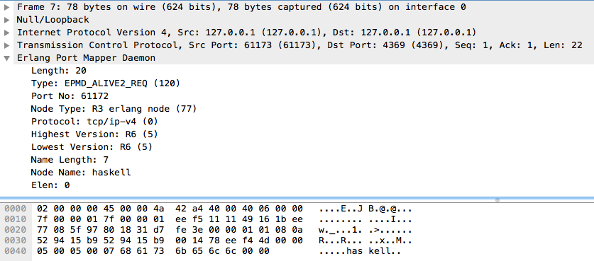
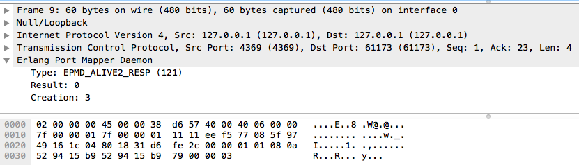

gen_java: easy java for erlang
Table of Contents
- 1. gen_java
- 2. Introduction
- 3. Analytics at Chef
- 4. Want more?
- 5. Alaska Pipeline
- 6. Parsing Rules
- 7. Configuration Web Service
- 8. Validating Rules
- 9. Erlaska Rules
- 10. erlaska_rules.erl
- 11. What If?
- 12. The easy way
- 13. Wait
- 14. JInterface
- 15. No RPC, No Problem
- 16. So, what's `Request` look like?
- 17. do_call
- 18. Request II
- 19. But wait, there's more
- 20. gen:call
- 21. 1st element
- 22. 2nd element
- 23. 3rd element
- 24. Now we know what erlang sends to other erlang nodes for rpc:call
- 25. Setting up the Java Side
- 26. Deserialization in Java
- 27. Validate Arity
- 28. Validate gen_call as first element:
- 29. Validate second element: {Pid::pid, Ref::ref}
- 30. Validate the call tuple: {call::atom, Mod::atom, Fun::atom, List::list(), user:atom()}
- 31. Validate M,F,A
- 32. Exception Handling: toErlangException
- 33. Exception Handling: send
- 34. But, sometimes not.
- 35. What does Erlang do with all this?
- 36. The gen_java module
- 37. The gen_java project structure
- 38. Starting the gen_java server
- 39. Basic Handshake
- 40. Handshake II
- 41. init_callback
- 42. Error logging
- 43. Recap
- 44. So, what do we do with actual rpc calls?
- 45. The Easy Way : Hard Coded
- 46. Needed by our Handshake
- 47. POC Methods
- 48. Nice for JVM inspection
- 49. WTF is the java module?!
- 50. Needed by our Handshake
- 51. All Others
- 52. Initializing the RPC Method Cache
- 53. dat java module
- 54. What about your own methods?
- 55. Caching?
- 56. Payoff!
- 57. Off the deep end?
- 58. Erlang Developer Experience
- 59. Your Java Module
- 60. Your sys.config
- 61. Your Supervisor
- 62. Options
- 63. init callback
- 64. Parse Transform
- 65. How it does it
- 66. 5 Functions
- 67. That's it!
- 68. Generated Function
- 69. Abstract Forms
- 70. Your own Abstract Form
- 71. Adding convenience
- 72. Then using java in your app is as easy as
- 73. Bringing it Back to CHEF Analytics
- 74. sys.config
- 75. alaska_rules.erl
- 76. init/1
- 77. Wraping Up
- 78. Erlang Haskell Interface
- 79. Erlang gives you zero Haskell for free
- 80. What I got:
- 81. Erlang Types
- 82. Packing functions
- 83. Half a Protocol
- 84. Getting the old one working
- 85. Spinning up a Haskell Erlang node
- 86. createSelf
- 87. serve
- 88. Learning EPMD
- 89. Reserving a port
- 90. What's that look like?
- 91. Haskell Does It
- 92. The Distribution Handshake
2 Introduction
2.1 I write Erlang at CHEF
2.2 I used to write Java
3 Analytics at Chef
Amongst other things, sends alerts to various endpoints when various things happen
3.1 Hipchat
3.2 SMTP
3.3 Webhooks
4 Want more?
BUY MY CONFIGURATION MANAGEMENT INFRASTRUCTURE
5 Alaska Pipeline
5.1 Apache Storm Pipeline
5.2 It's a pipeline, Alaska has pipelines, we called it Alaska
You write rules Rule Documentation
rules 'Rule 1' with priority = 1
rule on action
when true
then notify('hipchat')
end
end
rules 'Rule 2' with priority = 2
rule on action
when task = 'associate'
then notify('webhook')
end
end
notify(X) will use a different set of definitions for what those messages contain.
6 Parsing Rules
6.1 Alaska Rules, an ANTLR grammar for Java
Events processed by Apache Storm pipeline
8 Validating Rules
8.1 Dave likes writing parsers, so he gave us
9 Erlaska Rules
9.1 Neotoma Parser
Neotoma is a packrat parser-generator for Erlang for Parsing Expression Grammars (PEGs).
The important thing being that it's different from how ANTLR does grammars
10 erlaska_rules.erl
erlaska_rules is a module generated by the neotoma project. Once we have that parser, validating rules from webmachine was as easy as:
%% inside malformed_request/2 case erlaska_rules:parse(Rule) of true -> {false, Req, State#state{rule=Rule}}; {false, _Reason} -> {true, Req, State} end;
This worked fine at first, but every change to the grammar had to be duplicated. Well, it turns out that we never got that far. We never actually achieved 100% compatibility.
11 What If?
We could call the Java parser from Erlang?
We've already got the ANTLR grammar, which is the definitive truth for correctness of rules anyway. If we could use that, we cut our work in half. Even though Dave loves parsers.
12 The easy way
We could have just made a java command line tool for parsing rules, but it just seemed like too much of a hack
13 Wait
I've run Java from Erlang before with Riak_JMX. If you have to do something twice, it's time to make it generic.
But actually, I'm doing something new here. What I really want to do is send Java an rpc:call and have Erlang not really even care that Java is involved.
14 JInterface
It turns out we've had this for a while.
14.1 It understands the ideas of:
14.1.1 Nodes
14.1.2 EPMD
14.1.3 Erlang Datatypes
14.1.4 Process Messages
15 No RPC, No Problem
Note: My OTP source links will all be to the tag R16B03-1
I already knew that RPC calls were handled by a process called `rex`, so I stared digging around the Erlang source for it
https://github.com/erlang/otp/blob/OTP_R16B03-1/lib/kernel/src/rpc.erl#L344
%% In the source for rpc.erl -define(NAME, rex). Result = gen_server:call({?NAME,Node}, Request, Timeout),
16 So, what's `Request` look like?
https://github.com/erlang/otp/blob/OTP_R16B03-1/lib/kernel/src/rpc.erl#L296
%% rpc:call source call(N,M,F,A,infinity) when node() =:= N -> %% Optimize local call local_call(M,F,A); call(N,M,F,A,infinity) -> do_call(N, {call,M,F,A,group_leader()}, infinity); call(N,M,F,A,Timeout) when is_integer(Timeout), Timeout >= 0 -> do_call(N, {call,M,F,A,group_leader()}, Timeout).
17 do_call
17.1 Some RPC magic we don't need to worry about
17.2 what we do care about is that it calls gen_server:call
There's some pretty nifty stuff in there about spawning monitors and trapping exits, but it's not really relevant to what we're doing here
18 Request II
Request = {
call :: atom(),
Module :: atom(),
Function :: atom(),
Arguments :: [any()],
GroupLeader :: pid()
}
19 But wait, there's more
That's not all Erlang would be sending to another node. Let's dig into the gen_server:call
19.1 PEEVE: rpc is in kernel, but gen_server is in stdlib
call(Name, Request, Timeout) -> case catch gen:call(Name, '$gen_call', Request, Timeout) of {ok,Res} -> Res; {'EXIT',Reason} -> exit({Reason, {?MODULE, call, [Name, Request, Timeout]}}) end.
Ahhh, the rabbit hole goes deeper.
20 gen:call
Source: gen:call
%% deep in gen:do_call, which is called by gen:call erlang:send(Process, {Label, {self(), Mref}, Request}, [noconnect])
Jackpot! The second argument to erlang:send/3 is our message! The actual message being sent is a 3-tuple
21 1st element
'$gen_call'
22 2nd element
{ From :: pid(),
MRef :: ref() }
From pid could be waiting for a bunch of replies. MRef let's it know what it's a reply to
23 3rd element
Request from above
Request = {
call :: atom(),
Module :: atom(),
Function :: atom(),
Arguments :: [any()],
GroupLeader :: pid()
}
24 Now we know what erlang sends to other erlang nodes for rpc:call
25 Setting up the Java Side
JInterface gives us Node for free, so we can just set something up to listen for messages
public static void main(String[] stringArgs) throws Exception { String nodename = stringArgs[0]; String cookie = stringArgs[1]; OtpNode self = new OtpNode(nodename, cookie); boolean keepGoing = true; OtpMbox rex = self.createMbox("rex"); while(keepGoing) { // rex.receive is a blocking call, //so just hang out here until one shows up OtpErlangObject o = rex.receive(); System.out.println("Rex received '" + o.toString()); } }
The Simplest of Java nodes. Just opens up a `rex` mailbox and waits for messages. Any rpc:call to this node will just print it's content to stdout.
26 Deserialization in Java
This is where we start missing pattern matching. It takes about 50 lines of Java to parse out that 3-tuple that gen:do_call is sending over. And that's with Exception handling abstracted out
27 Validate Arity
OtpErlangTuple rexCall = (OtpErlangTuple)o; int arity = rexCall.arity(); if (arity != 3) { throw new Exception("Rex message has invalid arity. expected 3, got " + arity); }
28 Validate gen_call as first element:
Remember the 1st element? '$gen_call'
OtpErlangAtom gen_call = (OtpErlangAtom)(rexCall.elementAt(0)); String gen_call_string = gen_call.atomValue(); if (!gen_call_string.equals("$gen_call")) { throw new Exception("Rex message should start with '$gen_call': " + o.toString()); }
29 Validate second element: {Pid::pid, Ref::ref}
OtpErlangTuple fromTuple = (OtpErlangTuple)(rexCall.elementAt(1)); int fromArity = fromTuple.arity(); if (fromArity != 2) { throw new Exception("Rex message's 'from' tuple should have 2 elements, has " + fromArity + ": " + o.toString()); } this.fromPid = (OtpErlangPid)(fromTuple.elementAt(0)); this.fromRef = (OtpErlangRef)(fromTuple.elementAt(1));
30 Validate the call tuple: {call::atom, Mod::atom, Fun::atom, List::list(), user:atom()}
OtpErlangTuple callTuple = (OtpErlangTuple)(rexCall.elementAt(2)); int callArity = callTuple.arity(); if (callArity != 5) { throw new ErlangRemoteException(this.fromPid, this.fromRef, "Rex message's 'call' tuple should have 5 elements, has " + callArity + ": " + o.toString()); } OtpErlangAtom callAtom = (OtpErlangAtom)(callTuple.elementAt(0)); String callString = callAtom.atomValue(); if (!callString.equals("call")) { throw new ErlangRemoteException(this.fromPid, this.fromRef, "Rex message's call block should start with 'call', but it's : " + callString); }
31 Validate M,F,A
try { this.mfa = new ErlangModFunArgs( (OtpErlangAtom)(callTuple.elementAt(1)), (OtpErlangAtom)(callTuple.elementAt(2)), (OtpErlangList)(callTuple.elementAt(3))); this.remoteGroupLeaderPid = (OtpErlangPid)(callTuple.elementAt(4)); } catch (Exception e) { throw new ErlangRemoteException(this.fromPid, this.fromRef, e); }
32 Exception Handling: toErlangException
Source: ErlangRemoteException.java
turns exceptions into {error, "Message"}
public static OtpErlangObject toErlangException(Exception e) { OtpErlangObject[] elements = new OtpErlangObject[2]; elements[0] = new OtpErlangAtom("error"); elements[1] = new OtpErlangString(e.getMessage()); return new OtpErlangTuple(elements); }
33 Exception Handling: send
send knows just enough about erlang/rex to send an error message back to rpc:call
33.1 TODO: what does a response look like?
public void send(OtpMbox mbox) { OtpErlangObject[] elements = new OtpErlangObject[2]; elements[0] = this.fromRef; elements[1] = this.toErlangException(); mbox.send(this.fromPid, new OtpErlangTuple(elements)); }
34 But, sometimes not.
If you noticed, we don't start using ErlangRemoteException until after we've read in the second tuple. It's not until then that we know enough about the sender to know where to send the reply. Before that, we just throw regular exceptions. We'll catch both types when we process incoming messages. If we don't know how to respond, we'll just dump the output to the console, which we'll teach the erlang side to monitor.
Java incoming message processing
ErlangRemoteProcedureCallMessage msg = null; try { msg = new ErlangRemoteProcedureCallMessage(rex, o); } catch (ErlangRemoteException erlE) { erlE.send(rex); } catch (Exception e) { System.out.println("Rex received '" + o.toString() + "' but didn't know how to process it. Exception: " + e.getMessage()); }
35 What does Erlang do with all this?
35.1 TODO rpc receive?
36 The gen_java module
36.1 It's a gen_server
36.2 Starts a jar of your choosing!
36.3 When you build that jar, include gen_java.jar
37 The gen_java project structure
38 Starting the gen_java server
Opens a port running your jar in the JVM
39 Basic Handshake
case wait_until( fun() -> X = rpc:call(Nodename, erlang, node, [], 10000), lager:debug("[gen_java][~p] rpc:call(~p, erlang, node, []) = ~p", [Module, Nodename, X]), Nodename =:= X end, 20, 1000) of ok -> rpc:call(Nodename, erlang, link, [self()]), erlang:monitor_node(Nodename, true), init_callback( State#gen_java_state{ port = Port, pid = Pid}); timeout -> {stop, timeout}
40 Handshake II
40.1 keeps rpc calling erlang:node/0 until it gets an answer
40.2 if it doesn't stop the server, otherwise
40.3 link the java node back to the server's process
40.4 monitor the java node
40.5 init_callback?
41 init_callback
After we've started, there's a callback that lets you run some startup java code before we start accepting rpc:calls
42 Error logging
handle_info({Port, {data, {_Type, Data}}}, #gen_java_state { port = Port, module = M } = State) -> lager:info("[gen_java][~p] ~s", [M, Data]), {noreply, State};
Now that we've got a port running this JVM anything that java System.out.printlns will end up in your erlang application's log
43 Recap
43.1 We're sending rpc:calls to the java node
43.2 we can send error messages back
43.2.1 console
43.2.2 rpc responses
44 So, what do we do with actual rpc calls?
45 The Easy Way : Hard Coded
There are somethings we just want every java node to be able to do:
46 Needed by our Handshake
46.1 erlang:node/0
46.2 erlang:link/1
47 POC Methods
47.1 erlang:abs/1
48 Nice for JVM inspection
48.1 java:system_properties/0
48.2 java:system_env/0
48.3 java:input_args/0
49 WTF is the java module?!
I made it up. I made the erlang module up to. Java doesn't have these
Let's talk about how we map erlang MFAs
50 Needed by our Handshake
erlang:link/1 and erlang:node/0 are special cases because they need information about our java node's state as a JInterface.
51 All Others
51.1 must be java methods of type public static final
51.2 must have all arguments and return types of classes provided by JInterface
51.3 since java reflection is a bit expensive, we cache the Method objects.
52 Initializing the RPC Method Cache
Map<ErlangFunctionCacheKey, Method> RPCCache = new HashMap<ErlangFunctionCacheKey, Method>(); RPCCache.put( new ErlangFunctionCacheKey("erlang", "abs", OtpErlangDouble.class), Erlang.class.getMethod("abs", OtpErlangDouble.class)); RPCCache.put( new ErlangFunctionCacheKey("erlang", "abs", OtpErlangLong.class), Erlang.class.getMethod("abs", OtpErlangLong.class));
last arg is variable list of classes
53 dat java module
// wrapper for java.util.System.getProperties() RPCCache.put( new ErlangFunctionCacheKey("java", "system_properties"), Java.class.getMethod("system_properties")); RPCCache.put( new ErlangFunctionCacheKey("java", "system_env"), Java.class.getMethod("system_env")); RPCCache.put( new ErlangFunctionCacheKey("java", "input_arguments"), Java.class.getMethod("input_arguments"));
54 What about your own methods?
54.1 Module: Full Java Classname
54.2 Function: Java Method Name
54.3 Args: ARGS!
55 Caching?
if(RPCCache.containsKey(msg.getMFA().getKey())) { Method m = RPCCache.get(msg.getMFA().getKey()); msg.setMethod(m); pool.execute(msg); } else { // This means it's not in the cache, we should try and find it // and add it. Method m = find(msg.getMFA().getKey()); if (m != null) { RPCCache.put(msg.getMFA().getKey(), m); msg.setMethod(m); pool.execute(msg); } else { System.out.println("Bad RPC: " + msg.getMFA().getKey().toString()); // we couldn't add it, be nice and send a badrpc error back msg.send(msg.toErlangBadRPC()); } }
56 Payoff!
Reflection is only done once per method.
57 Off the deep end?
pool.execute(msg);
We went ahead and added some thread pooling on the java side.
Otherwise all the processing happening in once place. what if you asked it to do hard things?
58 Erlang Developer Experience
You might remember that I'm kind of a user experience nut
59 Your Java Module
-module(my_java). -compile({parse_transform, gen_java_parse_transform}).
60 Your sys.config
[{gen_java, [
{modules, [
{my_java, [
{jar, "/path/to/my.jar"},
{thread_count, 10}
]}
]}
]}
].
61 Your Supervisor
61.1 start it with my_java:start_link/0 or
{my_java,
{my_java, start_link, []},
permanent, 5000, worker, [my_java]},
62 Options
#bjorn
63 init callback
Remember that? put it here, it'll get called right after the handshake
-spec init(atom()) -> ok. init(Nodename) -> SomeState = {some, thing, maybe_a_file_path}, rpc:call(Nodename, 'com.yourcompany.package', 'init', [SomeState]).
64 Parse Transform
64.1 wrappers for gen_server:call
17 = my_java:call(erlang, abs, -17). <<"your heart's desire">> = my_java:call('com.my.package','myMethod',[]).
65 How it does it
Simple parse transforms are easy
This whole file just looks for a module's name, and subs it in to 5 functions
66 5 Functions
-export([start_link/0,start/0,call/3,call/4,stop/0]). stop() -> gen_java:stop(my_java). call(Module, Function, Args, Timeout) -> gen_java:call(my_java, Module, Function, Args, Timeout). call(Module, Function, Args) -> gen_java:call(my_java, Module, Function, Args). start() -> gen_java:start(my_java). start_link() -> gen_java:start_link(my_java).
67 That's it!
67.1 Let's look at one
func({call, 4}, L, #state{module=Module}) -> {function,L,call,4, [{clause,L, [{var,L,'Module'},{var,L,'Function'},{var,L,'Args'},{var,L,'Timeout'}], [], [{call,L, {remote,L,{atom,L,gen_java},{atom,L,call}}, [{atom,L,Module}, {var,L,'Module'}, {var,L,'Function'}, {var,L,'Args'}, {var,L,'Timeout'}]}]}]}.
There's only two variables in that whole mess
67.2 L : The line number at which this code goes
67.3 Module: The name of the module we're calling
68 Generated Function
call(Module, Function, Args, Timeout) -> gen_java:call(my_java, Module, Function, Args, Timeout).
69 Abstract Forms
All that gobbledy gook is an Abstract Form. You can make Artesianal Handcrafted Abstract Forms, but for things like this there's an easier way
F = fun(S) -> {ok, T, _} = erl_scan:string(S), {ok, AbsForm} = erl_parse:parse_form(T), AbsForm end.
70 Your own Abstract Form
F("call(Module, Function, Args, Timeout) -> gen_java:call(my_java, Module, Function, Args, Timeout)."). {function,1,call,4, [{clause,1, [{var,1,'Module'}, {var,1,'Function'}, {var,1,'Args'}, {var,1,'Timeout'}], [], [{call,2, {remote,2,{atom,2,gen_java},{atom,2,call}}, [{atom,2,my_java}, {var,2,'Module'}, {var,2,'Function'}, {var,2,'Args'}, {var,2,'Timeout'}]}]}]}
To add it to your own parse transform, you just have to sub all those 1's and 2's with L and all those my_java's with Module
71 Adding convenience
-spec my_method(binary()) -> binary() | gen_java:badrpc(). my_method(Binary) -> call('com.my.package','myMethod',[Binary]).
72 Then using java in your app is as easy as
my_java:my_method(Binary).
73 Bringing it Back to CHEF Analytics
73.1 erlaska_rules is out!
73.2 alaska_rules.jar is in!
74 sys.config
[{gen_java, [
{modules, [
{alaska_rules, [
{jar, "priv/alaska_rules.jar"},
{thread_count, 10}
]}
]}
]}
].
75 alaska_rules.erl
-module(alaska_rules). -compile({parse_transform, gen_java_parse_transform}). -export([valid_rule/1, valid_rule_group/1, init/1]). -spec valid_rule(binary()) -> true | {error, string()} | gen_java:badrpc(). valid_rule(Bin) -> call('com.chef.analytics.rules.erlang.RuleValidator', 'validRule', [Bin]). -spec valid_rule_group(binary()) -> true | {error, string()} | gen_java:badrpc(). valid_rule_group(Bin) -> call('com.chef.analytics.rules.erlang.RuleValidator', 'validRuleGroup', [Bin]).
76 init/1
We have some JSON schemas that alaksa_rules.jar uses for validation of attributes.
init/1 reads them in as a list of binaries and then sends them over to the java node
init(Nodename) -> Dir = schema_dir(), JSONSchemas = filelib:wildcard(filename:join([Dir, "*.json"])), Schemas = [begin {ok, Bin} = file:read_file(Filename), {list_to_atom(filename:basename(Filename)), Bin} end || Filename <- JSONSchemas], rpc:call(Nodename, 'com.chef.analytics.rules.erlang.RuleValidator', 'setSchemas', [Schemas]), ok.
77 Wraping Up
All in all, this is just a wrapper for the hard stuff Erlang gave us for free. But what if they didn't?
78 Erlang Haskell Interface
79 Erlang gives you zero Haskell for free
But somebody did: hackage erlang-0.1
80 What I got:
81 Erlang Types
data ErlType = ErlNull | ErlInt Int | ErlBigInt Integer | ErlString String | ErlAtom String | ErlBinary [Word8] | ErlList [ErlType] | ErlTuple [ErlType] | ErlPid ErlType Int Int Int -- node id serial creation | ErlPort ErlType Int Int -- node id creation | ErlRef ErlType Int Int -- node id creation | ErlNewRef ErlType Int [Word8] -- node creation id deriving (Eq, Show)
82 Packing functions
putC = putWord8 . fromIntegral putn = putWord16be . fromIntegral putN = putWord32be . fromIntegral puta = putByteString . B.pack putA = putByteString . C.pack getC = liftM fromIntegral getWord8 getn = liftM fromIntegral getWord16be getN = liftM fromIntegral getWord32be geta = liftM B.unpack . getByteString getA = liftM C.unpack . getByteString
83 Half a Protocol
Looks like erlang-0.1 knew how to connect to an Erlang node from Haskell
It wanted it one way, but I wanted the other
84 Getting the old one working
nano-md5 dependency didn't work anymore, so replaced with PureMD5
Existing Documentation wasn't great
85 Spinning up a Haskell Erlang node
start nodename = do setupLoggers DEBUG infoM "Test" $ "Starting Node: " ++ nodename self <- createSelf nodename mbox <- createMBox self debugM "Test" $ "mbox: " ++ (show mbox) -- Rex spawned here, because it's our job as consumers of this -- module to consume these forever $ do rex_mbox <- createNamedMBox "rex" self forkIO $ rex rex_mbox return ()
86 createSelf
-- | Instantiate a Haskell node. This initializes the FFI. createSelf :: String -> IO Self createSelf nodename = do inbox <- newEmptyMVar forkIO $ serve nodename inbox forkIO $ self nodename inbox node <- return . Self $ putMVar inbox -- Try spawning net_kernel mbox nk_mbox <- createNamedMBox "net_kernel" node forkIO $ net_kernel nk_mbox return node --Self $ putMVar inbox
serve is the function that connects to epmd, opens up a listener and then puts messages in a mbox
self is the thing that routes those messages
87 serve
88 Learning EPMD
89 Reserving a port
EMPD_ALIVE2_REQ
Open a socked with this request and keep it open… forever.
Here's the message EPMD expects
| Bytes | Content |
|---|---|
| 1 | 120 |
| 2 | Port to reserve |
| 1 | 77 (means normal erlang node) |
| 1 | Protocol (0 = tcp/ipv4) |
| 2 | Highest version (5 = R6B and higher) |
| 2 | Lowest version (5 = R6B and higher) |
| 2 | Length in bytes of nodename field |
| X | Nodename, X = ^^ |
| 2 | Length of Extras, we used 0 |
| Y | Extras, length ^^, but we sent none |
90 What's that look like?

Figure 1: Wiretap of ALIVE2_REQ

Figure 2: Bytes of ALIVE2_RESP
91 Haskell Does It
epmdAlive2Req :: String -> Int -> IO () epmdAlive2Req node port = withEpmd $ \hdl -> do let msg = runPut $ tag 'x' >> putn port >> putC 77 >> -- node type putC 0 >> -- protocol putn erlangVersion >> putn erlangVersion >> putn (length node) >> putA node >> putn 0 -- "Extra" length, 0 for none let len = fromIntegral $ B.length msg let out = runPut $ putn len >> putLazyByteString msg forever $ do B.hPut hdl out hFlush hdl B.hGetContents hdl return ()
See that forever call. just hang out letting EPMD know you still love it.
TIL: You can run `empd -debug` to see what's coming across the wire through EPMD
92 The Distribution Handshake
ALIVE2_REQ isn't even a quarter of the handshake.
We also have to do a back and forth over the port we're actually listening on
send_name ------> recv_name recv_status <------ send_status send_status ------> recv_status recv_challenge <------ send_challenge send_challenge_reply ------> recv_challenge_reply recv_challege_ack <------ send_challenge_ack
Let's gloss over this. If you want to see it, I did it here: Network.hs
92.1 Funky Middle Syntax
Protocol between connected nodes
Turns out we need to figure out how to interpret Erlangy packets coming in now